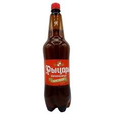

пиво — слабоалкогольный напиток[1], получаемый спиртовым брожением солодового сусла (чаще всего на основе ячменя) с помощью пивных дрожжей, обычно с добавлением хмеля. Содержание этилового спирта (крепость) в большинстве сортов пива около 3,0—6,0 % об. (крепкое содержит, как правило, от 8,5 % до 14 % об., иногда также выделяют лёгкое пиво, которое содержит 1—2 % об., отдельно выделяют безалкогольное пиво, которое сюда не включают), сухих веществ (в основном углеводов) 7—10 %, углекислого газа 0,48—1,0 %[2]. В пиве содержится более 800 соединений, которые определяют его вкус и аромат
- Первый рыцарь красный

- Второй охота
- Третий медведь
Большой
рыцарь красный
пиво